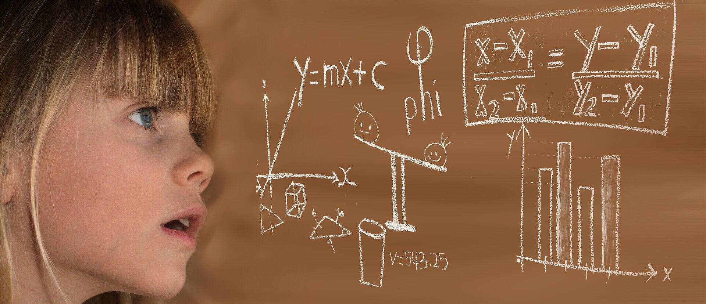
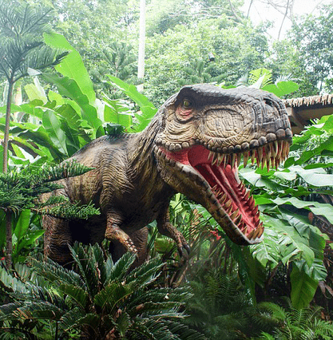
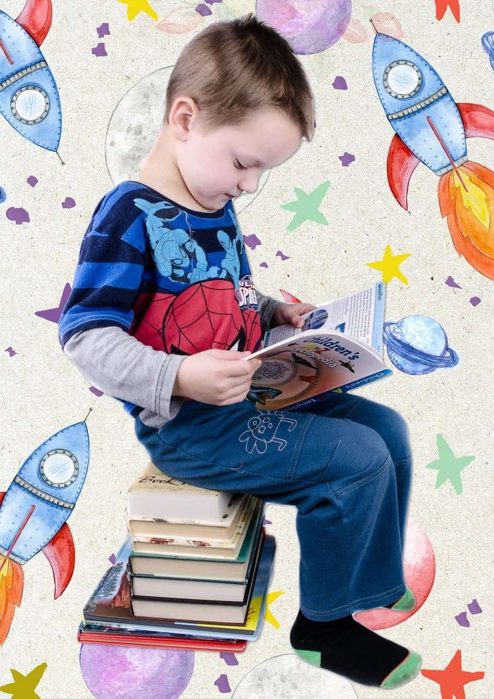
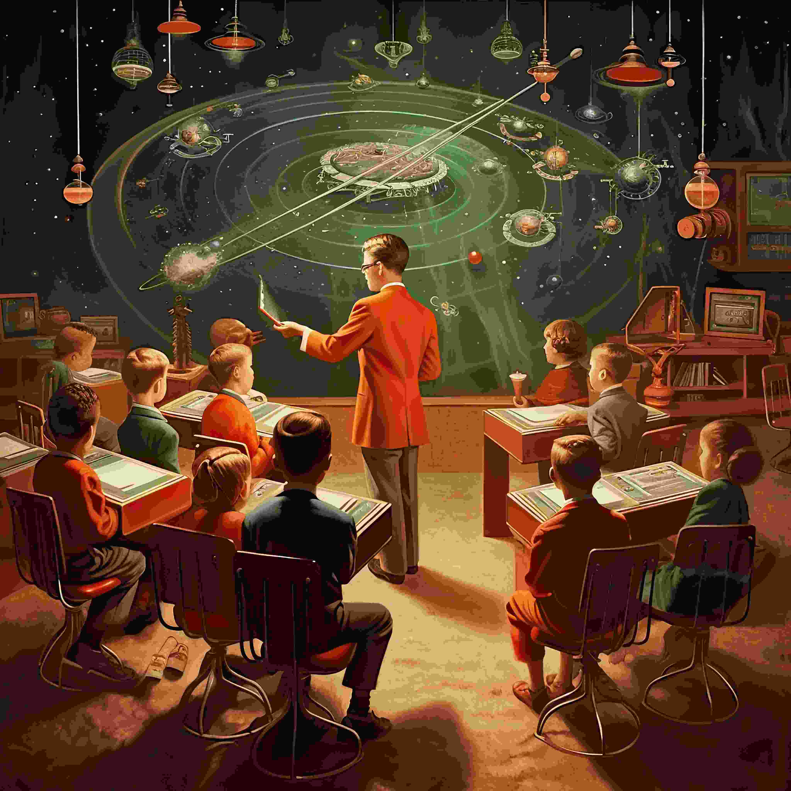

EXPLORE
FOR KIDS
Calling all young science enthusiasts! If you’re eager to expand your knowledge and dive headfirst into the fascinating world of science, our museum is the perfect destination for you. We offer a wide array of interactive exhibits and hands-on activities designed to spark curiosity and fuel your passion for discovery.
Whether you’re interested in exploring the wonders of space, experimenting with physics, or uncovering the secrets of biology, there’s something for everyone to enjoy. From thrilling demonstrations to engaging workshops, our exhibits provide a fun and educational experience that encourages you to ask questions and seek answers.
Come ready to learn, explore, and immerse yourself in the exciting world of science! Join us for an unforgettable adventure where every visit inspires a new discovery and ignites your love for learning.


Step into the realm of physics as you experience the thrill of our bumper swing, a hands-on demonstration of Newtonian principles in action. Feel the forces of motion, inertia, and gravity as you soar through the air, bringing the laws of physics to life in a way that’s both exciting and educational.
Or, take a journey back in time and come face-to-face with our resident dinosaur, an awe-inspiring reminder of Earth’s prehistoric past. Uncover the mysteries of ancient life as you explore how these massive creatures once roamed the planet and learn about the environmental changes that led to their extinction.
Our exhibits are designed to spark curiosity and inspire a love of exploration. Whether you’re fascinated by the laws of the universe or intrigued by the mysteries of ancient life, come prepared to immerse yourself in a world of discovery and wonder.
But that’s not all! For young aspiring scientists who are eager to dive deeper into the world of experimentation and discovery, we offer our exclusive Young Stars Club. Held every Saturday from 10:00 to 13:00, this exciting weekly program provides a unique opportunity for children to work side by side with our team of experts. Participants will engage in a variety of hands-on experiments, interactive workshops, and fun educational activities, all designed to nurture curiosity and ignite a lifelong passion for science.
Whether it’s building simple machines, exploring the wonders of chemistry, or learning about the forces of nature, the Young Stars Club encourages creative thinking and problem-solving in a supportive and engaging environment. It’s the perfect place for budding scientists to explore, experiment, and discover the joys of scientific exploration.


And when school’s out for the holidays, the fun doesn’t stop! Join us for our special Holiday Clubs, where children can embark on thrilling journeys of discovery with others their age. Each holiday season brings a brand-new theme to explore, ranging from the wonders of astronomy to the fascinating world of ecology, and everything in between. Whether you’re navigating the stars or uncovering the secrets of the natural world, these immersive experiences are sure to spark curiosity and excitement in young minds.
Our holiday clubs are designed to engage children with interactive activities, fun experiments, and educational adventures that turn every break into a chance for exploration. To find out more about the upcoming holiday themes and how you can be part of the adventure, simply send us a message – we’d love to welcome you aboard for a holiday filled with fun and learning!
FOR TEACHERS

As a community-driven museum, we are dedicated to collaborating with schools to create vibrant spaces for learning and exploration. We believe in the power of hands-on education and are committed to providing enriching experiences for students of all ages. Our expert team is ready to offer guided tours of the museum, giving students an engaging overview of our exhibits and collections. In addition, we provide interactive sessions in our learning laboratory, where students can dive deeper into the world of science through experiments and demonstrations.
To further enhance the learning experience, we also offer captivating video presentations designed to inspire curiosity and ignite a passion for science and discovery. Whether you’re looking to enrich your curriculum or simply offer a unique field trip, our museum provides the perfect setting. Contact us today to learn more about our facilities and arrange a time to bring your students for an unforgettable educational experience.
FOR RESEARCHERS
Are you looking to get involved with our team of researchers and academics? Our museum offers various ways for you to use our resources and contribute towards them.We have online records, laboratory space, and a working relationship with a number of universities around the country.
We also maintain strong working relationships with several universities across the country, providing a platform for collaborative research and academic exchange. Whether you’re conducting your own research or contributing to ours, we invite you to take advantage of our facilities and be part of the exciting discoveries happening here. To learn more about how you can get involved, please reach out to us for further details.